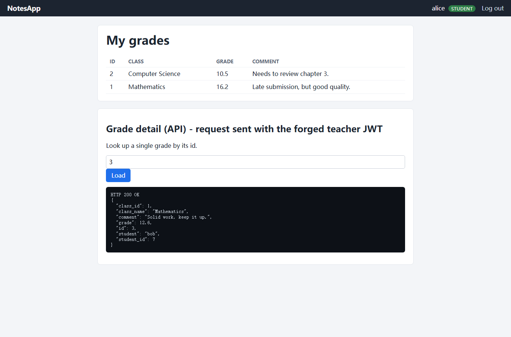
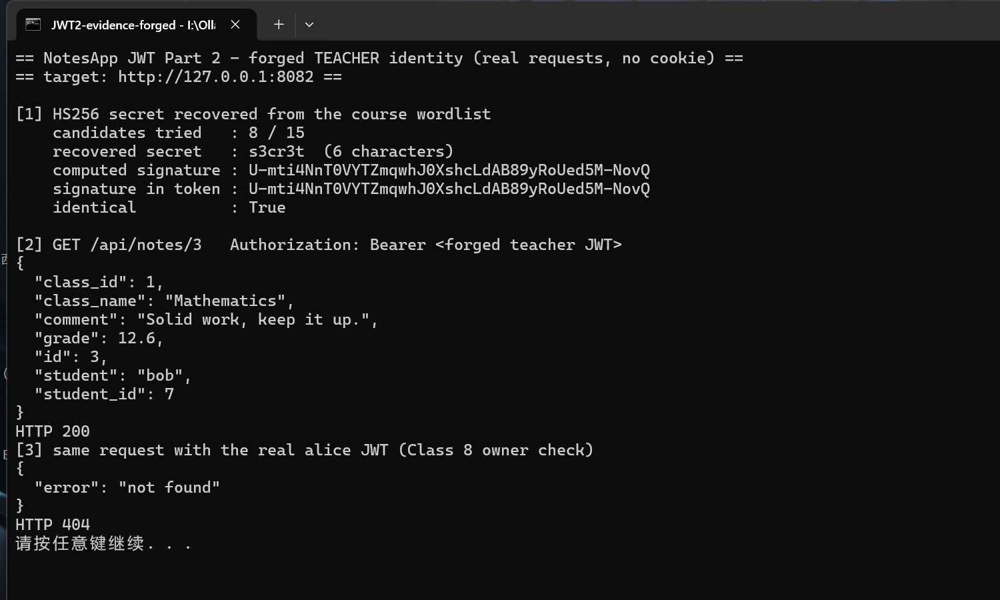
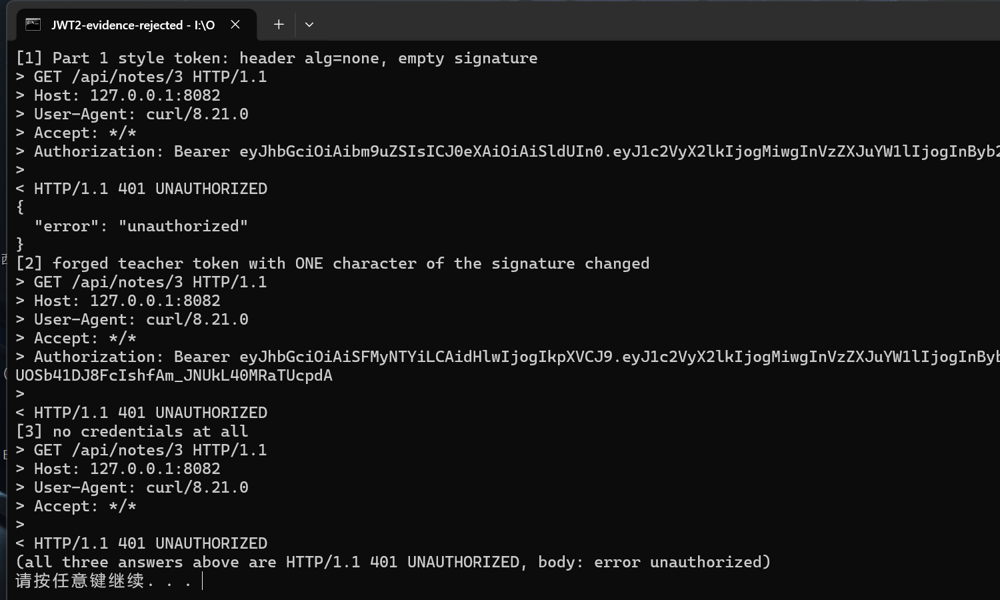

WU YANLAN | Student ID: 2023905420 | Class 6, Part 2 | 12 November 2026
What I read: Bob's Mathematics grade 12.6 and comment "Solid work, keep it up.", via /api/notes/3. Break 1 (historical Part 1, not rerun): an unsigned alg:none token carrying a teacher claim; see the separate saved report. Break 2 (this work): matched s3cr3t from the course wordlist and signed a valid HS256 teacher token. Why it worked: accepting none can skip verification; rejecting none still leaves a guessable signing key that lets an attacker sign teacher claims.
The original Part 2 run did not save a separate pre-run prediction. Before the revision verification, at 18:43:04 UTC+8 on 12 November 2026, the assistant recorded this expectation after reviewing the source and prior results: the weak-key teacher token should work, unsigned or tampered tokens should fail, and the strong-key control should have no wordlist match. This is a revision prediction, not an independent first-attempt prediction. The observed results agreed.
I used my own local NotesApp copy and synthetic seed data. I logged in only as alice / alicepw, then read the real server-issued JWT from the dashboard. Its header says HS256 and its payload says role=student:
header: {"alg":"HS256","typ":"JWT"}
payload: {"user_id":6,"username":"alice","role":"student"}
The payload is Base64url encoded, not encrypted: I decoded it locally without a key. Reading claims does not prove their authenticity. I computed HMAC-SHA256 over the real header.payload for each wordlist candidate, stopping when candidate 8 of 15, s3cr3t, reproduced the signature. The key is 6 characters, despite the course page's inconsistent reference to eight.
Using the recovered key, I signed a new teacher identity: user_id=2, username=prof.turing, role=teacher. This changed the identity claims, not just the role field. A cookie-free GET /api/notes/3 with that Bearer token returned HTTP 200: bob, Mathematics, grade 12.6, comment "Solid work, keep it up." No teacher password or teacher session was used.
The Part 2 instance has JWT_ALLOW_NONE=false. It rejects an unsigned token, but a guessed HS256 key lets me compute a signature that the server accepts. Rejecting none closes the unsigned-token shortcut; it does not stop a correctly signed forged identity when the shared key is guessable.
A uniformly random 32-character key over an alphabet of A symbols has A^32 possible values; an exhaustive search needs about A^32/2 guesses on average. A 15-entry wordlist cannot recover a key absent from that list. This is a theoretical explanation, not a measured brute-force duration. I did not run the optional long brute force.
The preserved final original record at 18:17:28 reports 0.0004 s for 8 guesses, not all 15. The separate revision run at 18:49:07 reports 0.000073 s for 8 guesses. They are separate measurements; earlier auxiliary captures may show another sample. Part 1 was not repeated, and the Class 8 ownership check remained in place.
| Request (all eight script API checks are cookie-free) | Result |
| No credentials -> Bob note 3 | 401 |
| Unsigned alg:none -> Bob note 3 | 401 |
| Real Alice token -> own note 1 | 200; grade 16.2 |
| Real Alice token -> Bob note 3 | 404 |
| Recovered-key teacher token -> Bob note 3 | 200; grade 12.6 |
| Tampered signature -> Bob note 3 | 401 |
| Recovered-key student token -> Bob note 3 | 404 |
| Wrong signing key -> Bob note 3 | 401 |
The revised scripts were run from a relocated copy, from a working directory outside the package, against fresh isolated databases on ports 8085 and 8086. Part 2 passed 8/8 status, body and no-Cookie checks. The optional strong-secret comparison tried all 15 candidates with no match, rejected the old forged token and unsigned token, and accepted a positive-control token signed with its actual private control key: 3/3 passed. That key was supplied only for the owner's positive control and was not used by the Part 2 recovery.
Four error checks passed: missing wordlist, empty wordlist, missing positive-control key, and attempted overwrite of existing evidence all returned nonzero exit codes. The evidence-page helper also made live local requests successfully. Both revision Compose projects were stopped using down without -v; their volumes were retained. Other pre-existing services were left running.
These three unchanged screenshots are original captures from the earlier local exercise, not new captures of the revision run. The browser picture retains Alice's session cookie; its API panel was driven by a real fetch with a forged Bearer token, and its heading and output were annotated by the capture script. The independent script HTTP matrix and curl transcript provide the no-Cookie proof. Normal Host and User-Agent headers may still be present.
The historical Part 1 report is included under references/part1. It preserves the saved Bob response and explains its evidence limits; it is not presented as a newly repeated Part 1 test. The original images and raw Part 2 results are unchanged. Fresh revision results and cleanup records are stored separately in evidence/revision-verification/.


